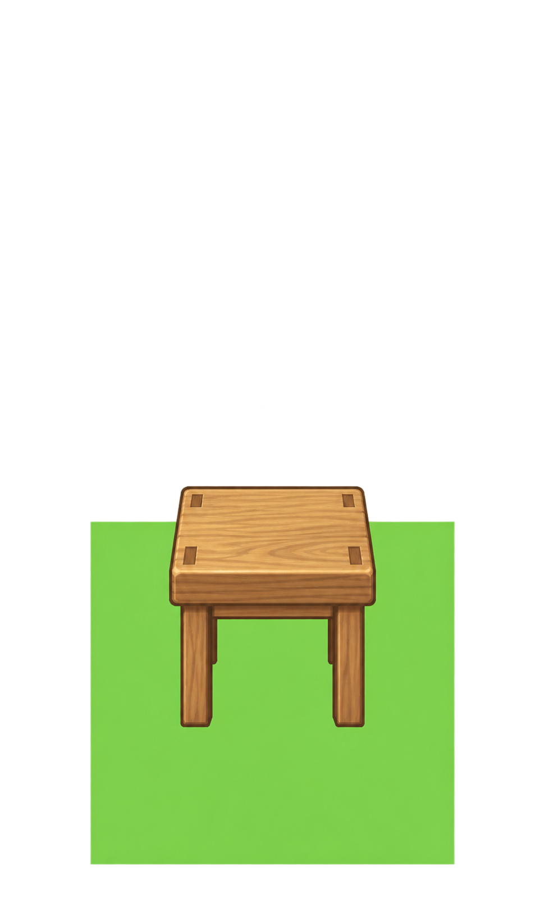
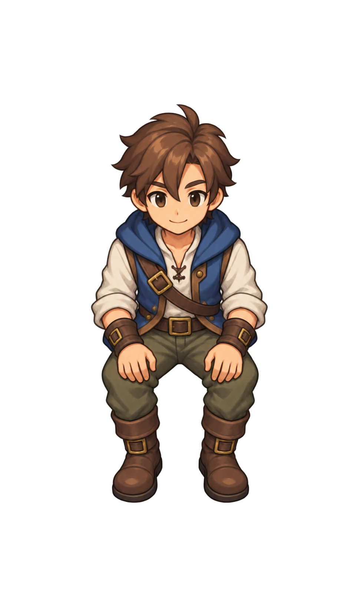

Two original independent layers retained. Stool registration rejected its non-square calibration floor; clean character-only generation omitted calibration floor, leaving measured root registration unsupported. No calibrated 192x320 sprites or successful recomposition claimed.

